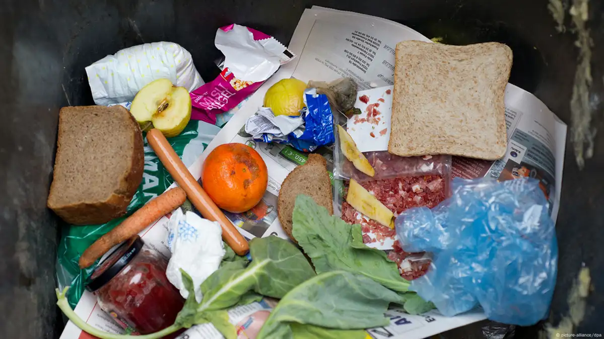

Fødevarestyrelsen

Fødevarestyrelsen viser, at Danmark hvert år producerer omkring 873.000 ton madspild. Det meste sker i husholdningerne, mens resten kommer fra restauranter, detailhandel og produktion. Tallene bruges til at forme nationale initiativer mod madspild – alt sammen med mål om at halvere madspildet inden 2030.